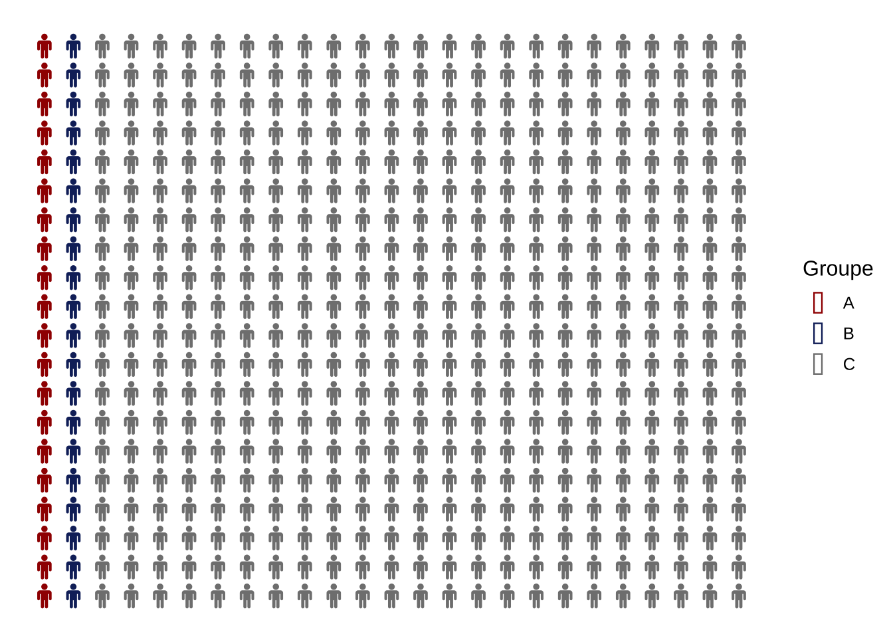
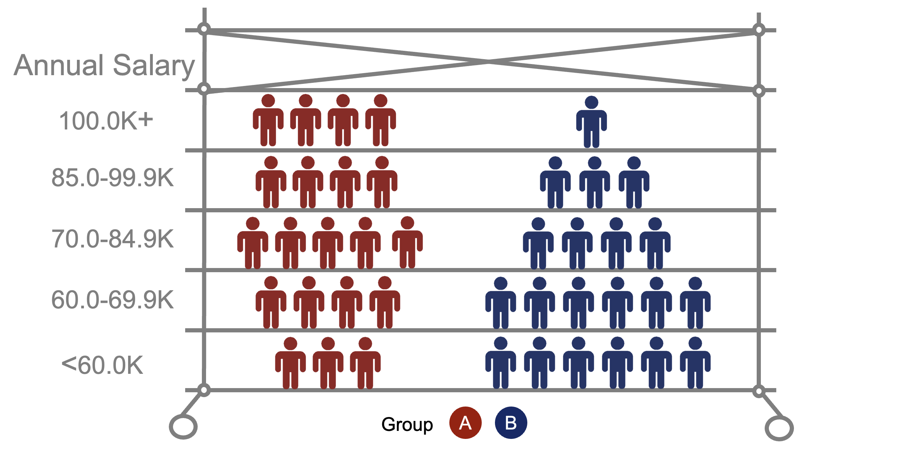
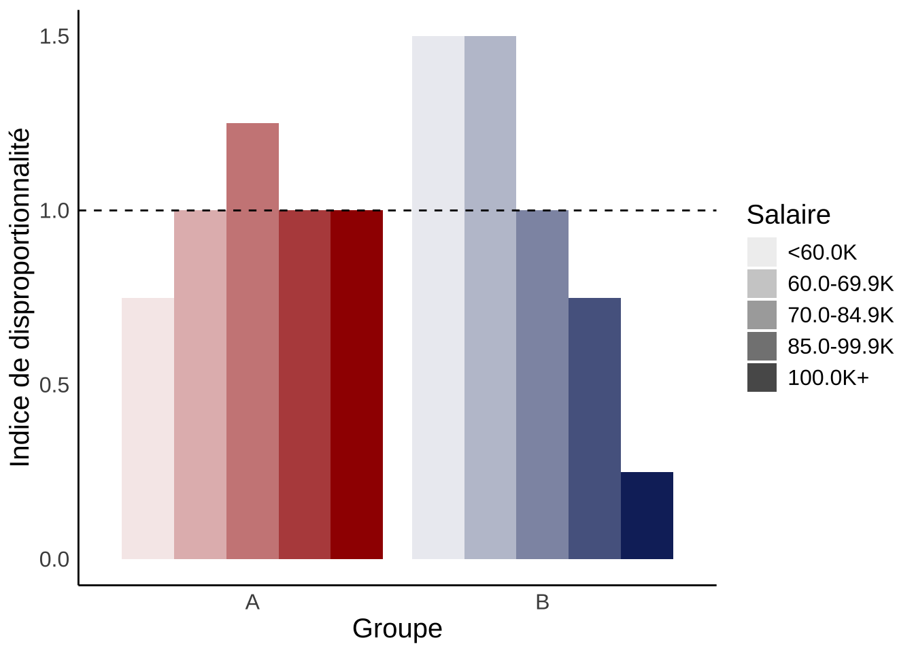

Sur l’indice de disproportionnalité
Estimation du salaire médian
Les salaires médians pour chaque groupe ont été estimées à l’aide de la formule suivante:
\[médian = L + \frac{ (\frac{n}{2} – F) }{f} * w\]
Calcul de l’ID
Dans cette analyse, l’indice de disproportionnalité (ID) est utilisé comme mesure de la représentation équitable. Il est calculé comme suit.
\[\frac{\%_{Groupe\: X; \:échelle\: des \:salaires \: i}}{\% _{Tous \:les \:Employees; \:échelle\: des \:salaires \: i}} = DI _{Groupe\:X; \:échelle\: des \:salaires\:i}\]
Par exemple, 23,51 % des employés noirs et 16,70 % de l’ensemble des employés se situent dans la fourchette salariale <60K. Cela nous donne un DI de 1,41.
\[ DI_{Employés \:de \:race \:noire \:<60K } =\frac{23.51\%}{16.70\%} = 1.41\]
Pour un tableau des DI par année, voir ici.
Comprendre l’ID - Un exemple
Supposons que nous ayons un département de 500 employés. Il y a deux groupes d’employés s’identifiant comme des minorités, A et B. Le groupe C est composé de la majorité, soit 460 employés. Les groupes A et B représentent 4 % des employés, soit 20 employés chacun, ce qui correspond à la population canadienne. À première vue, la représentation semble égale.
Toutefois, si l’on examine de plus près la répartition des 20 salariés des groupes A et B entre les différents niveaux de salaire, la situation est différente. Le groupe A est également réparti entre les niveaux de salaire, mais la majorité des salariés du groupe B restent aux niveaux de salaire les plus bas.

Le calcul de l’ID illustre davantage les différences dans la répartition des salaires. Au-dessus d’un ID de 1, la représentation d’un groupe à un niveau de salaire est supérieure à la moyenne de l’ensemble des salariés. En dessous de 1, la représentation d’un groupe à un niveau de salaire est inférieure à la moyenne de l’ensemble des salariés.
